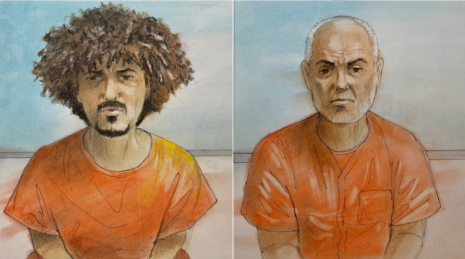
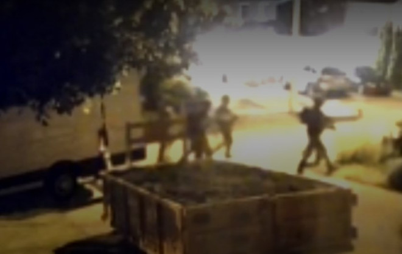
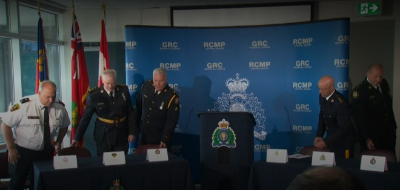

保守党众议院领袖Andrew Scheer表示，加拿大人有权知道一名与外国恐怖组织有联系的人是如何逃避加拿大的筛查程序移民并成为加拿大公民的。他要求国会召回其公共安全委员会，深入调查此事，并呼吁魁人党和新民主党支持这一请求。

图源：CTV
Ahmed Fouad Mostafa Eldidi（62岁）和他的儿子Mostafa Eldidi（26岁）于7月28日在安省里列治文山被捕，面临9项不同的恐怖主义指控，包括代表伊拉克和Levant伊斯兰国恐怖组织共谋谋杀。
大多数指控与据称在加拿大发生的活动有关，但62岁的Eldidi还被指控在加拿大境外实施了一项加重袭击罪。

图源：CTV
上周在法庭上，两人都否认了指控，也没有正式认罪。
Scheer表示，政府对于两名与恐怖组织有联系的人如何成功移民加拿大的沉默是不可接受的。
他周二上午在国会山的新闻发布会上说：这是杜鲁多国家安全系统的巨大失败。
Scheer说，加拿大人有权知道哪里出了问题。这个人是如何进入加拿大并获得加拿大公民身份的。加拿大人也有权知道是否有其他类似背景的人被允许进入我们的国家。

图源：CTV
到目前为止，联邦政府对这件事几乎没有发表任何评论。
保守党议员兼公共安全评论员Frank Caputo已经写信给公共安全部长Dominic LeBlanc，要求他公开所有关于涉嫌恐怖阴谋的详细信息。
Scheer说LeBlanc将是他希望在委员会上第一个传唤的证人。